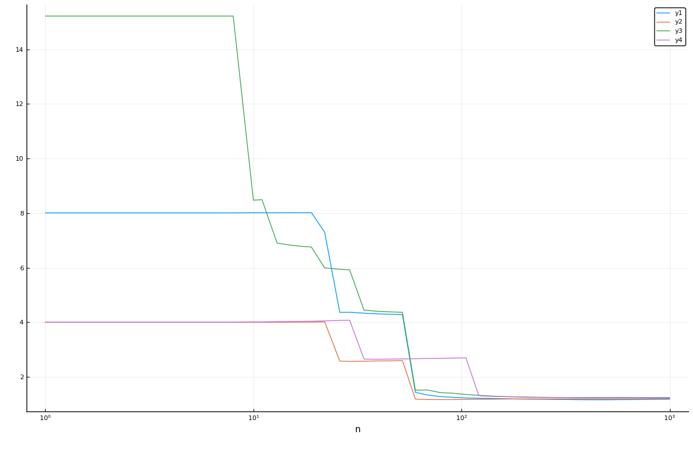

Common MLJ Workflows
Data ingestion
import RDatasets
channing = RDatasets.dataset("boot", "channing")
julia> first(channing, 4)
4×5 DataFrame
Row │ Sex Entry Exit Time Cens
│ Cat… Int32 Int32 Int32 Int32
─────┼──────────────────────────────────
1 │ Male 782 909 127 1
2 │ Male 1020 1128 108 1
3 │ Male 856 969 113 1
4 │ Male 915 957 42 1Inspecting metadata, including column scientific types:
schema(channing)┌───────┬───────────────┬──────────────────────────────────┐
│ names │ scitypes │ types │
├───────┼───────────────┼──────────────────────────────────┤
│ Sex │ Multiclass{2} │ CategoricalValue{String, UInt32} │
│ Entry │ Count │ Int64 │
│ Exit │ Count │ Int64 │
│ Time │ Count │ Int64 │
│ Cens │ Count │ Int64 │
└───────┴───────────────┴──────────────────────────────────┘
Horizontally splitting data and shuffling rows.
Here y is the :Exit column and X everything else:
y, X = unpack(channing, ==(:Exit), rng=123);Here y is the :Exit column and X everything else except :Time:
y, X = unpack(channing,
==(:Exit),
!=(:Time);
rng=123);
scitype(y)AbstractVector{Count} (alias for AbstractArray{Count, 1})schema(X)┌───────┬───────────────┬──────────────────────────────────┐
│ names │ scitypes │ types │
├───────┼───────────────┼──────────────────────────────────┤
│ Sex │ Multiclass{2} │ CategoricalValue{String, UInt32} │
│ Entry │ Count │ Int64 │
│ Cens │ Count │ Int64 │
└───────┴───────────────┴──────────────────────────────────┘
Fixing wrong scientfic types in X:
X = coerce(X, :Exit=>Continuous, :Entry=>Continuous, :Cens=>Multiclass)
schema(X)┌───────┬─────────────────┬──────────────────────────────────┐
│ names │ scitypes │ types │
├───────┼─────────────────┼──────────────────────────────────┤
│ Sex │ Multiclass{2} │ CategoricalValue{String, UInt32} │
│ Entry │ Continuous │ Float64 │
│ Cens │ Multiclass{462} │ CategoricalValue{Int64, UInt32} │
└───────┴─────────────────┴──────────────────────────────────┘
Loading a built-in supervised dataset:
table = load_iris();
schema(table)┌──────────────┬───────────────┬──────────────────────────────────┐
│ names │ scitypes │ types │
├──────────────┼───────────────┼──────────────────────────────────┤
│ sepal_length │ Continuous │ Float64 │
│ sepal_width │ Continuous │ Float64 │
│ petal_length │ Continuous │ Float64 │
│ petal_width │ Continuous │ Float64 │
│ target │ Multiclass{3} │ CategoricalValue{String, UInt32} │
└──────────────┴───────────────┴──────────────────────────────────┘
Loading a built-in data set already split into X and y:
X, y = @load_iris;
selectrows(X, 1:4) # selectrows works for any Tables.jl table(sepal_length = [5.1, 4.9, 4.7, 4.6], sepal_width = [3.5, 3.0, 3.2, 3.1], petal_length = [1.4, 1.4, 1.3, 1.5], petal_width = [0.2, 0.2, 0.2, 0.2],)
y[1:4]4-element CategoricalArray{String,1,UInt32}:
"setosa"
"setosa"
"setosa"
"setosa"Splitting data vertically after row shuffling:
channing_train, channing_test = partition(channing, 0.6, rng=123);Or, if already horizontally split:
(Xtrain, Xtest), (ytrain, ytest) = partition((X, y), 0.6, multi=true, rng=123)(((sepal_length = [6.7, 5.7, 7.2, 4.4, 5.6, 6.5, 4.4, 6.1, 5.4, 4.9 … 6.4, 5.5, 5.4, 4.8, 6.5, 4.9, 6.5, 6.7, 5.6, 6.4], sepal_width = [3.3, 2.8, 3.0, 2.9, 2.5, 3.0, 3.0, 2.9, 3.9, 2.5 … 3.1, 2.3, 3.7, 3.1, 3.0, 2.4, 2.8, 3.3, 2.9, 2.8], petal_length = [5.7, 4.1, 5.8, 1.4, 3.9, 5.2, 1.3, 4.7, 1.7, 4.5 … 5.5, 4.0, 1.5, 1.6, 5.5, 3.3, 4.6, 5.7, 3.6, 5.6], petal_width = [2.1, 1.3, 1.6, 0.2, 1.1, 2.0, 0.2, 1.4, 0.4, 1.7 … 1.8, 1.3, 0.2, 0.2, 1.8, 1.0, 1.5, 2.5, 1.3, 2.2]), (sepal_length = [6.0, 5.8, 6.7, 5.1, 5.0, 6.3, 5.7, 6.4, 6.1, 5.0 … 6.4, 6.8, 6.9, 6.1, 6.7, 5.0, 7.6, 6.3, 5.1, 5.0], sepal_width = [2.7, 2.6, 3.0, 3.8, 3.4, 2.8, 2.5, 3.2, 2.8, 3.5 … 2.7, 3.2, 3.1, 2.8, 2.5, 3.5, 3.0, 2.5, 3.8, 3.6], petal_length = [5.1, 4.0, 5.2, 1.9, 1.5, 5.1, 5.0, 4.5, 4.7, 1.6 … 5.3, 5.9, 5.4, 4.0, 5.8, 1.3, 6.6, 5.0, 1.6, 1.4], petal_width = [1.6, 1.2, 2.3, 0.4, 0.2, 1.5, 2.0, 1.5, 1.2, 0.6 … 1.9, 2.3, 2.1, 1.3, 1.8, 0.3, 2.1, 1.9, 0.2, 0.2])), (CategoricalValue{String, UInt32}["virginica", "versicolor", "virginica", "setosa", "versicolor", "virginica", "setosa", "versicolor", "setosa", "virginica" … "virginica", "versicolor", "setosa", "setosa", "virginica", "versicolor", "versicolor", "virginica", "versicolor", "virginica"], CategoricalValue{String, UInt32}["versicolor", "versicolor", "virginica", "setosa", "setosa", "virginica", "virginica", "versicolor", "versicolor", "setosa" … "virginica", "virginica", "virginica", "versicolor", "virginica", "setosa", "virginica", "virginica", "setosa", "setosa"]))Model search
Reference: Model Search
Searching for a supervised model:
X, y = @load_boston
ms = models(matching(X, y))59-element Vector{NamedTuple{(:name, :package_name, :is_supervised, :abstract_type, :deep_properties, :docstring, :fit_data_scitype, :human_name, :hyperparameter_ranges, :hyperparameter_types, :hyperparameters, :implemented_methods, :inverse_transform_scitype, :is_pure_julia, :is_wrapper, :iteration_parameter, :load_path, :package_license, :package_url, :package_uuid, :predict_scitype, :prediction_type, :supports_class_weights, :supports_online, :supports_training_losses, :supports_weights, :transform_scitype, :input_scitype, :target_scitype, :output_scitype)}}:
(name = ARDRegressor, package_name = ScikitLearn, ... )
(name = AdaBoostRegressor, package_name = ScikitLearn, ... )
(name = BaggingRegressor, package_name = ScikitLearn, ... )
(name = BayesianRidgeRegressor, package_name = ScikitLearn, ... )
(name = ConstantRegressor, package_name = MLJModels, ... )
(name = DecisionTreeRegressor, package_name = BetaML, ... )
(name = DecisionTreeRegressor, package_name = DecisionTree, ... )
(name = DeterministicConstantRegressor, package_name = MLJModels, ... )
(name = DummyRegressor, package_name = ScikitLearn, ... )
(name = ElasticNetCVRegressor, package_name = ScikitLearn, ... )
⋮
(name = RidgeRegressor, package_name = MultivariateStats, ... )
(name = RidgeRegressor, package_name = ScikitLearn, ... )
(name = RobustRegressor, package_name = MLJLinearModels, ... )
(name = SGDRegressor, package_name = ScikitLearn, ... )
(name = SVMLinearRegressor, package_name = ScikitLearn, ... )
(name = SVMNuRegressor, package_name = ScikitLearn, ... )
(name = SVMRegressor, package_name = ScikitLearn, ... )
(name = TheilSenRegressor, package_name = ScikitLearn, ... )
(name = XGBoostRegressor, package_name = XGBoost, ... )ms[6](name = "DecisionTreeRegressor",
package_name = "BetaML",
is_supervised = true,
abstract_type = Deterministic,
deep_properties = (),
docstring = "A simple Decision Tree for regression with support...",
fit_data_scitype =
Tuple{Table{_s28} where _s28<:(AbstractVector{_s29} where _s29<:Union{Missing, Known}), AbstractVector{_s149} where _s149<:Continuous},
human_name = "decision tree regressor",
hyperparameter_ranges =
(nothing, nothing, nothing, nothing, nothing, nothing),
hyperparameter_types =
("Int64", "Float64", "Int64", "Int64", "Function", "Random.AbstractRNG"),
hyperparameters = (:maxDepth,
:minGain,
:minRecords,
:maxFeatures,
:splittingCriterion,
:rng),
implemented_methods = [:fit, :predict],
inverse_transform_scitype = Unknown,
is_pure_julia = true,
is_wrapper = false,
iteration_parameter = nothing,
load_path = "BetaML.Trees.DecisionTreeRegressor",
package_license = "MIT",
package_url = "https://github.com/sylvaticus/BetaML.jl",
package_uuid = "024491cd-cc6b-443e-8034-08ea7eb7db2b",
predict_scitype = AbstractVector{_s149} where _s149<:Continuous,
prediction_type = :deterministic,
supports_class_weights = false,
supports_online = false,
supports_training_losses = false,
supports_weights = false,
transform_scitype = Unknown,
input_scitype =
Table{_s28} where _s28<:(AbstractVector{_s29} where _s29<:Union{Missing, Known}),
target_scitype = AbstractVector{_s149} where _s149<:Continuous,
output_scitype = Unknown)models("Tree");18-element Vector{NamedTuple{(:name, :package_name, :is_supervised, :abstract_type, :deep_properties, :docstring, :fit_data_scitype, :human_name, :hyperparameter_ranges, :hyperparameter_types, :hyperparameters, :implemented_methods, :inverse_transform_scitype, :is_pure_julia, :is_wrapper, :iteration_parameter, :load_path, :package_license, :package_url, :package_uuid, :predict_scitype, :prediction_type, :supports_class_weights, :supports_online, :supports_training_losses, :supports_weights, :transform_scitype, :input_scitype, :target_scitype, :output_scitype)}}:
(name = ABODDetector, package_name = OutlierDetectionNeighbors, ... )
(name = AdaBoostStumpClassifier, package_name = DecisionTree, ... )
(name = COFDetector, package_name = OutlierDetectionNeighbors, ... )
(name = DNNDetector, package_name = OutlierDetectionNeighbors, ... )
(name = DecisionTreeClassifier, package_name = BetaML, ... )
(name = DecisionTreeClassifier, package_name = DecisionTree, ... )
(name = DecisionTreeRegressor, package_name = BetaML, ... )
(name = DecisionTreeRegressor, package_name = DecisionTree, ... )
(name = EvoTreeClassifier, package_name = EvoTrees, ... )
(name = EvoTreeCount, package_name = EvoTrees, ... )
(name = EvoTreeGaussian, package_name = EvoTrees, ... )
(name = EvoTreeRegressor, package_name = EvoTrees, ... )
(name = ExtraTreesClassifier, package_name = ScikitLearn, ... )
(name = ExtraTreesRegressor, package_name = ScikitLearn, ... )
(name = KNNDetector, package_name = OutlierDetectionNeighbors, ... )
(name = LOFDetector, package_name = OutlierDetectionNeighbors, ... )
(name = RandomForestClassifier, package_name = DecisionTree, ... )
(name = RandomForestRegressor, package_name = DecisionTree, ... )A more refined search:
models() do model
matching(model, X, y) &&
model.prediction_type == :deterministic &&
model.is_pure_julia
end;Searching for an unsupervised model:
models(matching(X))52-element Vector{NamedTuple{(:name, :package_name, :is_supervised, :abstract_type, :deep_properties, :docstring, :fit_data_scitype, :human_name, :hyperparameter_ranges, :hyperparameter_types, :hyperparameters, :implemented_methods, :inverse_transform_scitype, :is_pure_julia, :is_wrapper, :iteration_parameter, :load_path, :package_license, :package_url, :package_uuid, :predict_scitype, :prediction_type, :supports_class_weights, :supports_online, :supports_training_losses, :supports_weights, :transform_scitype, :input_scitype, :target_scitype, :output_scitype)}}:
(name = ABODDetector, package_name = OutlierDetectionNeighbors, ... )
(name = ABODDetector, package_name = OutlierDetectionPython, ... )
(name = AEDetector, package_name = OutlierDetectionNetworks, ... )
(name = AffinityPropagation, package_name = ScikitLearn, ... )
(name = AgglomerativeClustering, package_name = ScikitLearn, ... )
(name = Birch, package_name = ScikitLearn, ... )
(name = CBLOFDetector, package_name = OutlierDetectionPython, ... )
(name = COFDetector, package_name = OutlierDetectionNeighbors, ... )
(name = COFDetector, package_name = OutlierDetectionPython, ... )
(name = COPODDetector, package_name = OutlierDetectionPython, ... )
⋮
(name = PCA, package_name = MultivariateStats, ... )
(name = PCADetector, package_name = OutlierDetectionPython, ... )
(name = PPCA, package_name = MultivariateStats, ... )
(name = RODDetector, package_name = OutlierDetectionPython, ... )
(name = SODDetector, package_name = OutlierDetectionPython, ... )
(name = SOSDetector, package_name = OutlierDetectionPython, ... )
(name = SpectralClustering, package_name = ScikitLearn, ... )
(name = Standardizer, package_name = MLJModels, ... )
(name = TSVDTransformer, package_name = TSVD, ... )Getting the metadata entry for a given model type:
info("PCA")
info("RidgeRegressor", pkg="MultivariateStats") # a model type in multiple packages(name = "RidgeRegressor",
package_name = "MultivariateStats",
is_supervised = true,
abstract_type = Deterministic,
deep_properties = (),
docstring = "Ridge regressor with regularization parameter lamb...",
fit_data_scitype =
Tuple{Table{_s28} where _s28<:(AbstractVector{_s29} where _s29<:Continuous), AbstractVector{Continuous}},
human_name = "ridge regressor",
hyperparameter_ranges = (nothing, nothing),
hyperparameter_types = ("Union{Real, AbstractVecOrMat{T} where T}", "Bool"),
hyperparameters = (:lambda, :bias),
implemented_methods = [:clean!, :fit, :fitted_params, :predict],
inverse_transform_scitype = Unknown,
is_pure_julia = true,
is_wrapper = false,
iteration_parameter = nothing,
load_path = "MLJMultivariateStatsInterface.RidgeRegressor",
package_license = "MIT",
package_url = "https://github.com/JuliaStats/MultivariateStats.jl",
package_uuid = "6f286f6a-111f-5878-ab1e-185364afe411",
predict_scitype = AbstractVector{Continuous},
prediction_type = :deterministic,
supports_class_weights = false,
supports_online = false,
supports_training_losses = false,
supports_weights = false,
transform_scitype = Unknown,
input_scitype =
Table{_s28} where _s28<:(AbstractVector{_s29} where _s29<:Continuous),
target_scitype = AbstractVector{Continuous},
output_scitype = Unknown)Extracting the model document string:
@example doc("DecisionTreeClassifier", pkg="DecisionTree")
## Instantiating a model
*Reference:* [Getting Started](@ref), [Loading Model Code](@ref)
@example workflows Tree = @load DecisionTreeClassifier pkg=DecisionTree tree = Tree(minsamplessplit=5, max_depth=4)
or
@julia tree = (@load DecisionTreeClassifier)() tree.minsamplessplit = 5 tree.max_depth = 4
## Evaluating a model
*Reference:* [Evaluating Model Performance](evaluating_model_performance.md)
@example workflows X, y = @load_boston KNN = @load KNNRegressor knn = KNN() evaluate(knn, X, y, resampling=CV(nfolds=5), measure=[RootMeanSquaredError(), MeanAbsoluteError()])
Note `RootMeanSquaredError()` has alias `rms` and `MeanAbsoluteError()` has alias `mae`.
Do `measures()` to list all losses and scores and their aliases.
## Basic fit/evaluate/predict by hand:
*Reference:* [Getting Started](index.md), [Machines](machines.md),
[Evaluating Model Performance](evaluating_model_performance.md), [Performance Measures](performance_measures.md)
@example workflows crabs = load_crabs() |> DataFrames.DataFrame schema(crabs)
@example workflows y, X = unpack(crabs, ==(:sp), !in([:index, :sex]); rng=123)
Tree = @load DecisionTreeClassifier pkg=DecisionTree tree = Tree(max_depth=2) # hide
Bind the model and data together in a *machine* , which will
additionally store the learned parameters (*fitresults*) when fit:
@example workflows mach = machine(tree, X, y)
Split row indices into training and evaluation rows:
@example workflows train, test = partition(eachindex(y), 0.7); # 70:30 split
Fit on train and evaluate on test:
@example workflows fit!(mach, rows=train) yhat = predict(mach, X[test,:]) mean(LogLoss(tol=1e-4)(yhat, y[test]))
Note `LogLoss()` has aliases `log_loss` and `cross_entropy`.
Run `measures()` to list all losses and scores and their aliases ("instances").
Predict on new data:
@example workflows Xnew = (FL = rand(3), RW = rand(3), CL = rand(3), CW = rand(3), BD =rand(3)) predict(mach, Xnew) # a vector of distributions
@example workflows predict_mode(mach, Xnew) # a vector of point-predictions
## More performance evaluation examples
Evaluating model + data directly:
@example workflows evaluate(tree, X, y, resampling=Holdout(fraction_train=0.7, shuffle=true, rng=1234), measure=[LogLoss(), Accuracy()])
If a machine is already defined, as above:
@example workflows evaluate!(mach, resampling=Holdout(fraction_train=0.7, shuffle=true, rng=1234), measure=[LogLoss(), Accuracy()])
Using cross-validation:
@example workflows evaluate!(mach, resampling=CV(nfolds=5, shuffle=true, rng=1234), measure=[LogLoss(), Accuracy()])
With user-specified train/test pairs of row indices:
@example workflows f1, f2, f3 = 1:13, 14:26, 27:36 pairs = [(f1, vcat(f2, f3)), (f2, vcat(f3, f1)), (f3, vcat(f1, f2))]; evaluate!(mach, resampling=pairs, measure=[LogLoss(), Accuracy()])
Changing a hyperparameter and re-evaluating:
@example workflows tree.max_depth = 3 evaluate!(mach, resampling=CV(nfolds=5, shuffle=true, rng=1234), measure=[LogLoss(), Accuracy()])
## Inspecting training results
Fit a ordinary least square model to some synthetic data:
@example workflows x1 = rand(100) x2 = rand(100)
X = (x1=x1, x2=x2) y = x1 - 2x2 + 0.1*rand(100);
OLS = @load LinearRegressor pkg=GLM ols = OLS() mach = machine(ols, X, y) |> fit!
Get a named tuple representing the learned parameters,
human-readable if appropriate:
@example workflows fitted_params(mach)
Get other training-related information:
@example workflows report(mach)
## Basic fit/transform for unsupervised models
Load data:
@example workflows X, y = @load_iris train, test = partition(eachindex(y), 0.97, shuffle=true, rng=123)
Instantiate and fit the model/machine:
@example workflows PCA = @load PCA pca = PCA(maxoutdim=2) mach = machine(pca, X) fit!(mach, rows=train)
Transform selected data bound to the machine:
@example workflows transform(mach, rows=test);
Transform new data:
@example workflows Xnew = (sepallength=rand(3), sepalwidth=rand(3), petallength=rand(3), petalwidth=rand(3)); transform(mach, Xnew)
## Inverting learned transformations
@example workflows y = rand(100); stand = Standardizer() mach = machine(stand, y) fit!(mach) z = transform(mach, y); @assert inverse_transform(mach, z) ≈ y # true
## Nested hyperparameter tuning
*Reference:* [Tuning Models](tuning_models.md)
@example workflows X, y = @load_iris; nothing # hide
Define a model with nested hyperparameters:
@example workflows Tree = @load DecisionTreeClassifier pkg=DecisionTree tree = Tree() forest = EnsembleModel(model=tree, n=300)
Define ranges for hyperparameters to be tuned:
@example workflows r1 = range(forest, :bagging_fraction, lower=0.5, upper=1.0, scale=:log10)
@example workflows r2 = range(forest, :(model.n_subfeatures), lower=1, upper=4) # nested
Wrap the model in a tuning strategy:
@example workflows tuned_forest = TunedModel(model=forest, tuning=Grid(resolution=12), resampling=CV(nfolds=6), ranges=[r1, r2], measure=BrierLoss())
Bound the wrapped model to data:
@example workflows mach = machine(tuned_forest, X, y)
Fitting the resultant machine optimizes the hyperparameters specified
in `range`, using the specified `tuning` and `resampling` strategies
and performance `measure` (possibly a vector of measures), and
retrains on all data bound to the machine:
@example workflows fit!(mach)
Inspecting the optimal model:
@example workflows F = fitted_params(mach)
@example workflows F.best_model
Inspecting details of tuning procedure:
@example workflows r = report(mach); keys(r)
@example workflows r.history[[1,end]]
Visualizing these results:
julia using Plots plot(mach)

Predicting on new data using the optimized model:
@example workflows predict(mach, Xnew)
## Constructing linear pipelines
*Reference:* [Composing Models](composing_models.md)
Constructing a linear (unbranching) pipeline with a *learned* target
transformation/inverse transformation:
@example workflows X, y = @loadreducedames KNN = @load KNNRegressor knnwithtarget = TransformedTargetModel(model=KNN(K=3), target=Standardizer()) pipe = (X -> coerce(X, :age=>Continuous)) |> OneHotEncoder() |> knnwithtarget
Evaluating the pipeline (just as you would any other model):
@example workflows pipe.onehotencoder.drop_last = true evaluate(pipe, X, y, resampling=Holdout(), measure=RootMeanSquaredError(), verbosity=2)
Inspecting the learned parameters in a pipeline:
@example workflows mach = machine(pipe, X, y) |> fit! F = fittedparams(mach) F.transformedtargetmodeldeterministic.model
Constructing a linear (unbranching) pipeline with a *static* (unlearned)
target transformation/inverse transformation:
@example workflows Tree = @load DecisionTreeRegressor pkg=DecisionTree verbosity=0 treewithtarget = TransformedTargetModel(model=Tree(), target=y -> log.(y), inverse = z -> exp.(z)) pipe2 = (X -> coerce(X, :age=>Continuous)) |> OneHotEncoder() |> treewithtarget; nothing # hide
## Creating a homogeneous ensemble of models
*Reference:* [Homogeneous Ensembles](homogeneous_ensembles.md)
@example workflows X, y = @loadiris Tree = @load DecisionTreeClassifier pkg=DecisionTree tree = Tree() forest = EnsembleModel(model=tree, baggingfraction=0.8, n=300) mach = machine(forest, X, y) evaluate!(mach, measure=LogLoss())
## Performance curves
Generate a plot of performance, as a function of some hyperparameter
(building on the preceding example)
Single performance curve:
@example workflows r = range(forest, :n, lower=1, upper=1000, scale=:log10) curve = learning_curve(mach, range=r, resampling=Holdout(), resolution=50, measure=LogLoss(), verbosity=0)
julia using Plots plot(curve.parametervalues, curve.measurements, xlab=curve.parametername, xscale=curve.parameter_scale)

Multiple curves:
@example workflows curve = learningcurve(mach, range=r, resampling=Holdout(), measure=LogLoss(), resolution=50, rngname=:rng, rngs=4, verbosity=0)
julia plot(curve.parametervalues, curve.measurements, xlab=curve.parametername, xscale=curve.parameter_scale) ```
